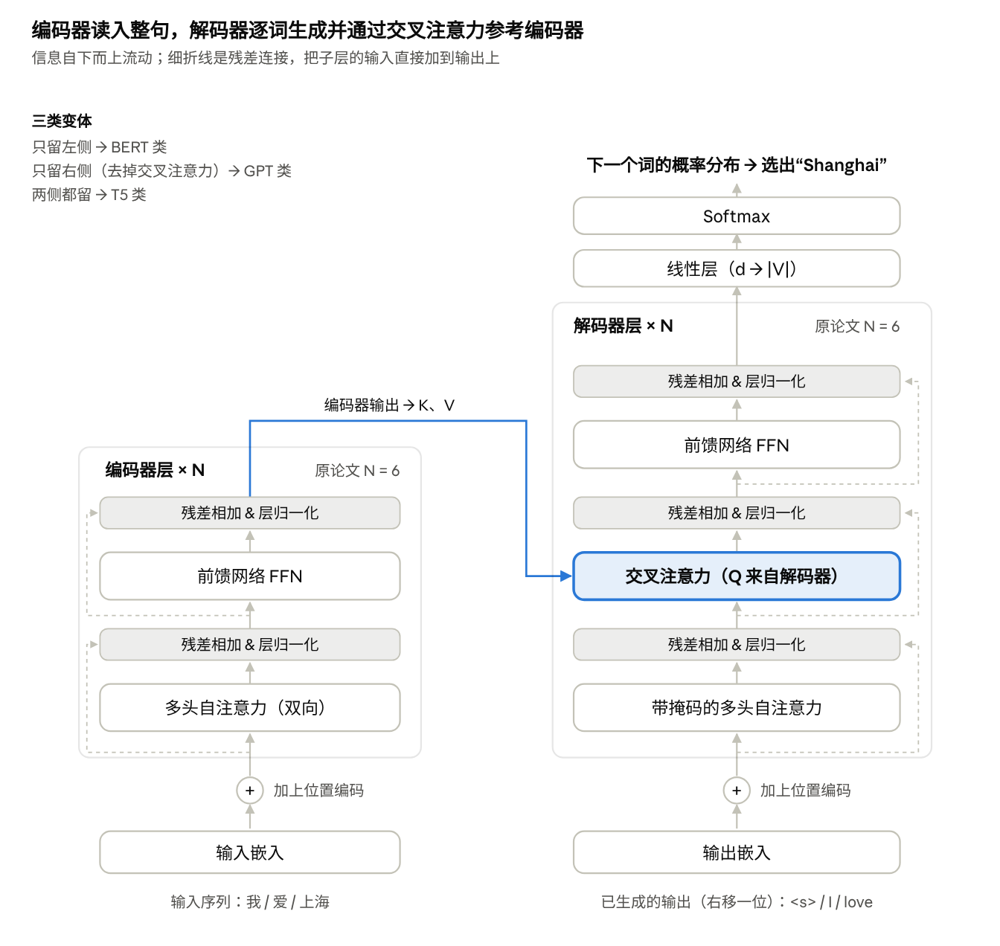

2.3 模型分类
几乎所有现代 LLM 都建立在 Transformer 之上，区别在于用了它的哪一部分。只用编码器的代表是 BERT，只用解码器的代表是 GPT，两者都用的代表是 T5。在这三类架构之外，还有按应用领域划分的垂直领域模型。
2.3.1 标准 Transformer 模型
Transformer 由 Google 的 Vaswani 等人在 2017 年的论文《Attention Is All You Need》中提出，最初用于机器翻译。它完全抛弃了循环结构（RNN），只用注意力机制建模序列中任意两个位置之间的关系。这带来了两个决定性优势：一是所有位置可以并行计算，能充分利用 GPU；二是任意两个词之间只隔一步，长距离依赖不再随距离衰减。

图 2-6 · 标准 Transformer 结构（据 Vaswani 等，2017 重绘）
去掉右侧解码器就得到 BERT 类模型，去掉左侧编码器和交叉注意力就得到 GPT 类模型。
标准 Transformer 由编码器和解码器两个栈组成，原论文中各有 6 层，隐藏维度 d_model = 512。它的核心组件如下。
（1）缩放点积注意力。每个词的向量经过三个线性变换，得到查询 Q（我在找什么）、键 K（我能提供什么）、值 V（我的内容）。用 Q 与所有 K 的点积衡量相关性，经 softmax 归一化后对 V 加权求和：
\[Attention(Q,K,V) = softmax\left( \frac{QK^{\top}}{\sqrt{d_{k}}} \right)V\]
除以 √d_k 的原因是：若 Q、K 的各分量独立且方差为 1，它们的点积方差为 d_k。维度越高，点积的数值越大，softmax 会进入饱和区，梯度接近于零。除以 √d_k 把方差拉回 1，让训练保持稳定。
算例：手算一次注意力
设序列只有 3 个 token，d_k = 2。为了便于计算，取 Q = K，每行对应一个 token：
\[Q = K = \begin{bmatrix} 1 & 0 \\ 0 & 1 \\ 1 & 1 \end{bmatrix},\quad\quad V = \begin{bmatrix} 1 & 0 \\ 0 & 2 \\ 3 & 1 \end{bmatrix}\]
第一步，算相关性分数。S = QKᵀ / √2，第 i 行第 j 列表示 token i 对 token j 的关注程度：
\[S = \frac{1}{\sqrt{2}}\begin{bmatrix} 1 & 0 & 1 \\ 0 & 1 & 1 \\ 1 & 1 & 2 \end{bmatrix} \approx \begin{bmatrix} 0.707 & 0 & 0.707 \\ 0 & 0.707 & 0.707 \\ 0.707 & 0.707 & 1.414 \end{bmatrix}\]
第二步，按行做 softmax，得到注意力权重矩阵 A，每行之和为 1：
\[A \approx \begin{bmatrix} 0.401 & 0.198 & 0.401 \\ 0.198 & 0.401 & 0.401 \\ 0.248 & 0.248 & 0.503 \end{bmatrix}\]
第三步，对 V 加权求和，得到输出 O = AV：
\[O = AV \approx \begin{bmatrix} 1.604 & 0.797 \\ 1.401 & 1.203 \\ 1.759 & 1.000 \end{bmatrix}\]
以第 3 个 token 为例：它的查询 (1, 1) 与自己的键最相似，所以把约一半的注意力（0.503）给了自己，其余平分给前两个 token。输出向量是三个值向量的加权平均，它把整个序列的信息按相关程度”混合”进了当前位置。
如果加上解码器使用的因果掩码（见 2.3.3 节），第 1 个 token 只能看见自己，权重变为 (1, 0, 0)，输出就是它自己的 V = (1, 0)；第 2 个 token 只能看见前两个，对分数 (0, 0.707) 做 softmax 得到权重 (0.330, 0.670)，输出为 (0.330, 1.340)；第 3 个 token 本来就能看见全部，结果不变。
计算代价。分数矩阵 S 的大小是 T × T，注意力的计算量和显存都随序列长度的平方增长。上下文从 4K 扩展到 128K，T 增加 32 倍，S 就要增加约 1000 倍。这是长上下文模型的核心难题。FlashAttention 等算法通过分块计算、避免把完整的 S 写入显存，大幅缓解了显存和带宽压力，但计算量的平方关系依然存在。
（2）多头注意力。把 Q、K、V 切成 h 份（原论文 h = 8），各自独立计算注意力后再拼接。不同的头可以关注不同类型的关系，例如一个头跟踪主谓关系，另一个头跟踪指代关系：
\[MultiHead(Q,K,V) = Concat({head}_{1},\ldots,{head}_{h})W^{O}\]
\[{head}_{i} = Attention(QW_{i}^{Q},KW_{i}^{K},VW_{i}^{V})\]
（3）前馈网络（FFN）。注意力负责在位置之间”交换信息”，FFN 则对每个位置单独做非线性变换，一般认为模型的大量”知识”存储在这里：
\[FFN(x) = max(0,\, xW_{1} + b_{1})\, W_{2} + b_{2}\]
中间层维度通常是 d_model 的 4 倍（原论文为 2048）。
（4）残差连接与层归一化。每个子层的输出都是 LayerNorm(x + Sublayer(x))。残差连接让梯度可以直接穿过深层网络，层归一化让每层的输入分布保持稳定，二者是把网络堆到上百层的前提。
（5）位置编码。注意力本身不区分顺序，“狗咬人”和”人咬狗”对它来说是同一组词。因此需要给每个位置加上位置信息。原论文使用正弦位置编码：
\[PE_{(pos,2i)} = sin\left( \frac{pos}{10000^{2i/d_{model}}} \right),\quad PE_{(pos,2i + 1)} = cos\left( \frac{pos}{10000^{2i/d_{model}}} \right)\]
（6）解码器的两处不同。一是自注意力加了掩码，每个位置只能看到自己和之前的位置，防止”偷看答案”；二是多了一个交叉注意力层，其 Q 来自解码器，K 和 V 来自编码器的输出，用来把生成过程”对齐”到输入上。
一个实用的估算。一个 Transformer 层中，注意力的 4 个投影矩阵共 4d² 个参数，FFN 的两个矩阵共 2 × d × 4d = 8d² 个参数，合计约 12d²。因此 L 层模型的参数量约为 N ≈ 12Ld²。以 GPT-3 为例，L = 96、d = 12288，算得 12 × 96 × 12288² ≈ 1740 亿，与公布的 1750 亿基本吻合。
2017 年以来，Transformer 的骨架没有大变，但细节持续改进：把 LayerNorm 移到子层之前（Pre-LN）并换成更简单的 RMSNorm；用旋转位置编码（RoPE）替代正弦编码；FFN 激活函数从 ReLU 换成 SwiGLU；用分组查询注意力（GQA）减少推理时的显存占用；用混合专家（MoE）让模型参数量很大、但每个 token 只激活一小部分。LLaMA、DeepSeek 等系列分别采用了其中一些改进，具体结构随版本而异。
2.3.2 基于编码器的模型
编码器模型只保留 Transformer 的编码器部分，注意力是双向的：每个词都能同时看到左右两侧的上下文。它擅长”理解”，但不擅长”生成”。
代表模型是 Google 2018 年提出的 BERT（Bidirectional Encoder Representations from Transformers）。它的核心训练任务是掩码语言建模（Masked Language Modeling，MLM）：随机选中 15% 的 token，让模型根据上下文预测它们原来是什么。被选中的 token 中，80% 替换为 [MASK]，10% 替换为随机词，10% 保持不变。这样做是因为微调和使用时输入里没有 [MASK]，若训练时只见过 [MASK]，模型会只在看到 [MASK] 时才认真理解语境。例如：
输入：上海是中国的 [MASK] 大城市。 → 预测：第一
BERT 还使用了下一句预测（NSP）任务，判断两个句子是否相邻。编码器模型通常用于文本分类、情感分析、命名实体识别、抽取式问答，以及生成句向量用于语义检索。今天 RAG 系统中的向量嵌入模型和重排序模型，大多仍是编码器架构。
在 BERT 基础上改进的代表模型：
RoBERTa（Meta，2019）：去掉 NSP 任务，使用动态掩码、更多数据、更大批次和更长训练，证明 BERT 原来”训练不足”。
ALBERT（Google，2019）：跨层共享参数、分解词嵌入矩阵，用更少的参数达到相近效果。
DistilBERT（Hugging Face，2019）：用知识蒸馏把 BERT 压缩 40%，速度提升 60%，保留约 97% 的性能。
2.3.3 基于解码器的模型
解码器模型只保留带掩码的解码器（去掉交叉注意力），训练目标是预测下一个 token，即 2.1.3 节的语言模型公式。因果掩码通过在注意力分数上加一个上三角为负无穷的矩阵实现：
\[softmax\left( \frac{QK^{\top}}{\sqrt{d_{k}}} + M \right)V,\quad\quad M_{ij} = \left\{ \begin{matrix} 0, & j \leq i \\ - \infty, & j > i \end{matrix} \right.\ \]
生成时，模型一次只产生一个 token，把它接到输入末尾再生成下一个，这称为自回归（Auto-regressive）生成。解码器模型用于文本生成、对话、机器翻译、多语言文本生成和代码生成等几乎所有任务。代表模型有 OpenAI 的 GPT（Generative Pre-Training）系列、Google 的 PaLM、BigScience 的 BLOOM、DeepMind 的 Chinchilla、Meta 的 LLaMA，以及国内的 Qwen、DeepSeek 等。
为什么今天的主流 LLM 几乎都是解码器架构？主要有四个原因：
训练信号更密集。MLM 只对 15% 的位置计算损失，而下一词预测在每个位置都有损失，同样的数据能学到更多。
任务形式统一。任何任务都可以写成”给定前文，续写后文”，不需要为每个任务设计输出层，这是零样本和少样本能力的基础。
推理效率高。因果掩码保证已生成部分的表示不会因后文而改变，可以缓存每层的 K 和 V（KV Cache），生成新 token 时无需重算前文。
经验上扩展性最好。在大规模下，解码器模型的缩放曲线和零样本表现最稳定。
2.3.4 基于编码器—解码器的模型
编解码器模型保留完整的标准 Transformer：编码器用双向注意力从输入中提取有用的表示，解码器通过交叉注意力读取这些表示，来辅助并约束生成。它天然适合”输入一段、输出另一段”的任务，如翻译和摘要；在多模态领域也很常见，最著名的应用是视觉语言预训练（VLP）——用编码器处理图像，用解码器生成描述文字。
代表模型：
T5（Google，2019）：提出”一切都是文本到文本”，把分类、翻译、摘要统一为输入文本、输出文本。预训练任务是片段破坏（span corruption）：把连续的几个词替换为一个哨兵符，让解码器还原。
BART（Meta，2019）：用多种方式破坏输入（掩码、删除、打乱句子顺序等），训练模型还原原文，在摘要任务上表现突出。
mT5：T5 的多语言版本，覆盖 101 种语言。
UL2（Google，2022）：混合多种去噪目标，试图统一理解类和生成类任务。
Flan-T5（Google，2022）：在 T5 基础上用上千个任务做指令微调，显著提升了零样本能力。
2.3.5 基于垂直领域的模型
垂直领域模型是为特定行业训练或调优的 LLM。它们在架构上大多仍是解码器，区别在于数据和训练方式。构建方式主要有两种：一是在预训练阶段就混入大量领域数据，从头训练；二是在通用模型上用领域数据继续预训练或微调。
| 模型 | 领域 | 机构与年份 | 特点 |
|---|---|---|---|
| Med-PaLM 2 | 医疗 | Google，2023 | 在美国医师执照考试风格的 MedQA 上达到 86.5%，接近专家水平 |
| Med-PaLM | 医疗 | Google，2022 | 在 PaLM 上做指令提示微调，MedQA 准确率 67.6%，首次超过及格线 |
| ClinicalGPT | 临床医疗 | 2023 | 用病历、医患对话等临床数据微调的中文医疗模型 |
| BloombergGPT | 金融 | 彭博，2023 | 500 亿参数，用约 3630 亿 token 金融数据加 3450 亿 token 通用数据从头训练 |
| FinGPT | 金融 | 开源社区，2023 | 在开源基座上用低成本微调（如 LoRA）快速适配金融数据 |
| Galactica | 科学文献 | Meta，2022 | 在论文、公式、分子序列上训练；公开演示因编造参考文献等幻觉问题三天后下线 |
| Minerva | 数学 | Google，2022 | 在 PaLM 上用数学网页和 arXiv 论文继续训练，擅长定量推理 |
垂直模型的前景并非没有争议。后续研究发现，通用的 GPT-4 在不少金融和医疗任务上已不逊于专用模型。这印证了 2.1.4 节的”广泛性似乎战胜了专业性”。当前更常见的做法，是在强大的通用模型上叠加领域微调和 RAG，而不是为每个行业从头训一个模型。
2.3.6 三类架构对比
| 编码器（BERT 类） | 解码器（GPT 类） | 编解码器（T5 类） | |
|---|---|---|---|
| 注意力方向 | 双向 | 单向（因果掩码） | 编码端双向，解码端单向 + 交叉注意力 |
| 预训练目标 | 掩码语言建模 | 下一个 token 预测 | 去噪 / 片段还原 |
| 核心能力 | 理解 | 生成 | 条件生成（输入→输出） |
| 典型任务 | 分类、实体识别、抽取式问答、向量检索 | 对话、写作、代码、几乎所有通用任务 | 翻译、摘要、视觉语言任务 |
| 代表模型 | BERT、RoBERTa、ALBERT、DistilBERT | GPT、PaLM、BLOOM、LLaMA、DeepSeek | T5、BART、mT5、UL2、Flan-T5 |